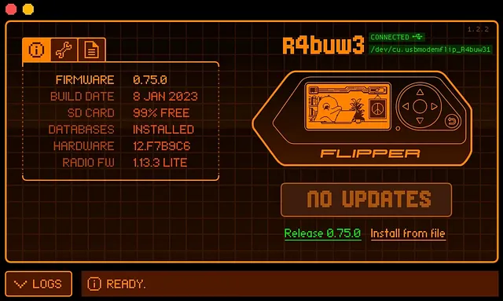
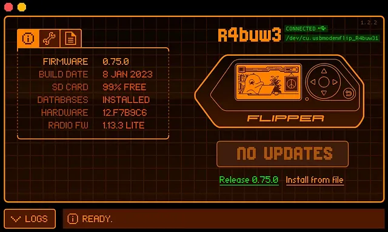

This article is the first in a series whose subject, you guessed it, is Flipper Zero.
Articles concerning research into Flipper Zero will be written in French and English.

Summary
- Introduction
- Presentation of Flipper Zero
- Features of Flipper Zero
- 🗝️ WiFi Dev Board
- 🗝️ Prototyping Board
- 🗝️Basic features
- 🗝️ U2F (Universal 2nd Factor)
- 🗝️Frequency and signal analyzer
- 🗝️ Card emulation RFID/NFC
- 🔠RFID
- 🔠NFC
- 🗝️ Control of infrared devices
- 🗝️ BadUSB
- Advantages | Disadvantages
- 💪 Advantages
- 👠Disadvantages
- Use case
- 🤝Conclusion🤝
Introduction
In this article, we will explore the features of Flipper Zero, a versatile tool that finds its place in the field of cybersecurity and IoT prototyping. We will look at the different features of this tool and the benefits it offers.
Whether you’re a security professional looking to test wireless networks or an IoT enthusiast looking for a rapid prototyping solution, Flipper Zero might just be the tool you need.
Presentation of Flipper Zero
Flipper Zero is an innovative tool that combines several essential features for IoT security and prototyping. It comes in the form of a small portable device with an LCD screen, buttons and wireless connectivity. The tool is designed to be easily programmable and customizable, making it a good choice
 


Features of Flipper Zero
🗝️ WiFi Dev Board
One of the key features of this tool is its ability to function as a WiFi development board. This means it can connect to wireless networks, scan access points and perform security tests on WiFi networks
This feature can be used, for example, to detect and analyze WiFi access points available in the surroundings. The tool will enable you to obtain detailed information about each access point, including SSID, signal strength, encryption type, and more.

🗝️ Prototyping Board
In addition to its WiFi functionality, it can also be used as a prototyping board for IoT application development. It has input/output (GPIO) pins that allow you to connect sensors, actuators, and other electronic components. This facilitates rapid prototyping of IoT solutions.
Using this prototyping feature, you can develop specific features for your intrusion detection system. For example, you can program it to monitor wireless communications, analyze IoT data packets, and identify common attack patterns.

🗝️Basic features
In addition to its advanced features, Flipper Zero also offers basic features that make it versatile and convenient for everyday use.
It has a responsive screen and intuitive user interface, making it easy to navigate and interact with the tool. The battery performance is another notable advantage.
🗝️ U2F (Universal 2nd Factor)
One of my daily favorite feature, the U2F. Flipper Zero supports the U2F standard, making it a handy tool for enhancing the security of your accounts. By using it as a U2F authentication device, you will add an extra layer of protection, reducing the risk of unauthorized access to your accounts.
🗝️ Frequency and signal analyzer
This tool offers the possibility of analyze and work with various radio frequencies. This allows you to explore and comprehend signals emitted by wireless devices such as remote controls, sensors, communication systems, etc. Thanks to its integrated signal analyzer, you can visualize and interact with different frequencies, opening the way to advanced applications.
With this functionality, you will be able, for example, to scan and analyze the different radio frequencies in a given environment. It will allow you to detect the frequencies used by wireless devices, such as remote controls, sensors, communication devices, as mentioned in the previous paragraph.
🗝️ Card emulation RFID/NFC
It has RFID/NFC card emulation functionality, allowing you to interact with access control systems and explore possibilities offered by this technology.
🔠RFID
Use this feature, for example, to emulate a specific RFID card and test the security of access control systems. By emulating an authorized access card, you can verify whether the access control system is correctly configured and whether vulnerabilities exist, such as insecure card use, configuration errors, or weak communication protocols.
🔠NFC
NFC technology can be used, for example, to emulate a specific contactless payment card. This allows you to simulate contactless payment transactions and analyze the communication protocols used between the contactless payment terminal and the emulated card. You can check are properly secured and if sensitive data is transmitted.
🗝️ Control of infrared devices
With its infrared device control function, Flipper Zero allows you to take control of many commonly used electronic devices, such as televisions, air conditioners, etc. You can create custom commands and perform actions remotely.
You can use this feature, for instance, to program and emulate various infrared remote controls. This emulation allows specific commands and actions to be simulated on infrared-controlled devices, facilitating security testing of such systems.
🗝️ BadUSB
One of the powerful features of Flipper Zero is its ability to act as a BadUSB device. BadUSB is a technique where a malicious USB device masquerades as a trusted device in order to compromise a system. Flipper Zero can be programmed to act as BadUSB.
In the case of a penetration test, this functionality would mainly be used for exploiting a system via the injection and execution of malicious code. But it can also be used for the development of countermeasures.
Countermeasure: Defensive IT security measure taking the form of a technique, a device, a procedure and the aim of which is to oppose an effect, to counter a specific attack likely to harm property computers.
By using it to simulate BadUSB attacks, you can also work on developing countermeasures to strengthen system security. The objective is to identify security vulnerabilities exploited by BadUSB attacks and implement prevention and detection measures.
By combining these basic features with the advanced features mentioned previously, Flipper Zero becomes a complete and powerful tool for IoT enthusiasts but also cybersecurity professionals. It offers a wide range of possibilities and allows you to explore new areas.
Advantages | Disadvantages
💪 Advantages
- Versatility
- Portability
- Ease of use
- Customizability
- Advanced Features
👠Disadvantages
- Hardware limitations
- Cost
Use case
Flipper Zero offers a plethora of use cases in the field of cybersecurity and IoT prototyping. As a security tool, it can be used to perform wireless network security testing, security systems audits and vulnerability detection. For IoT enthusiasts, it offers a rapid prototyping platform to develop applications and experiment with new ideas in the field of the Internet of Things.
Conclusion
In conclusion, Flipper Zero is a versatile tool that offers interesting features for cybersecurity professionals and IoT enthusiasts. Whether you’re conducting WiFi security tests, rapidly prototyping IoT projects, or exploring new possibilities, the Flipper Zero proves to be a valuable tool. With its customizable features and its portability, it opens up numerous perspectives in the field of security and prototyping. So, don’t hesitate to delve deeper into Flipper Zero’s features and push the limits of your projects with this tool.
In this article, we have focused on the overall look and functionality of the tool, in the following articles, we will talk about specific features, discuss associated attacks with case examples, and compare the different available firmware versions.